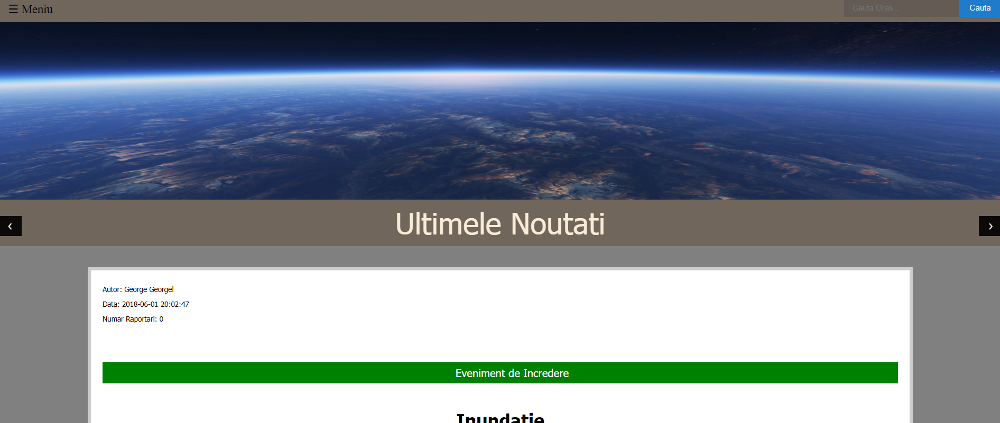
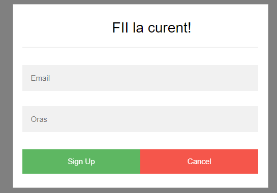
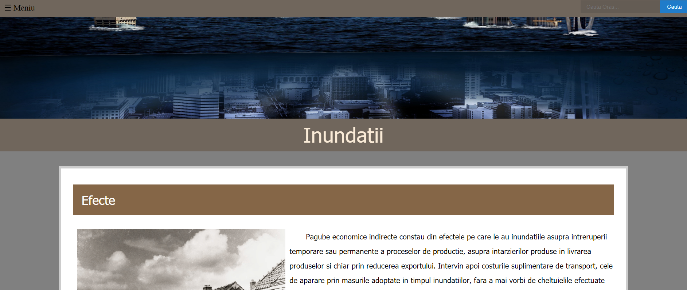
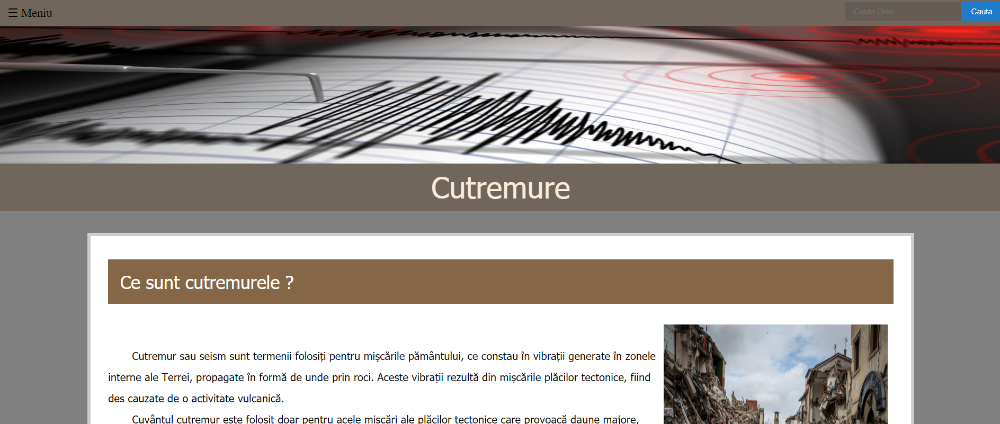
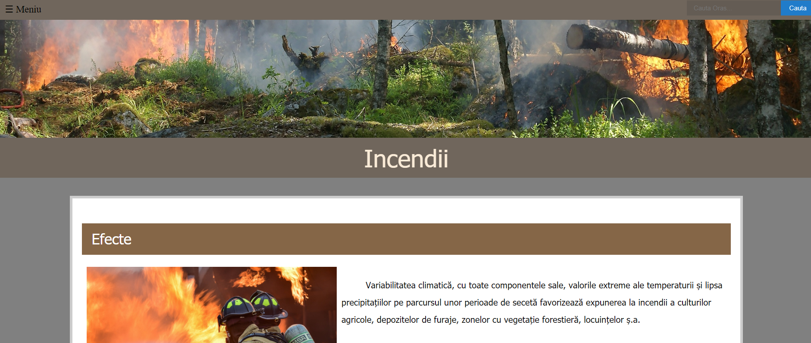
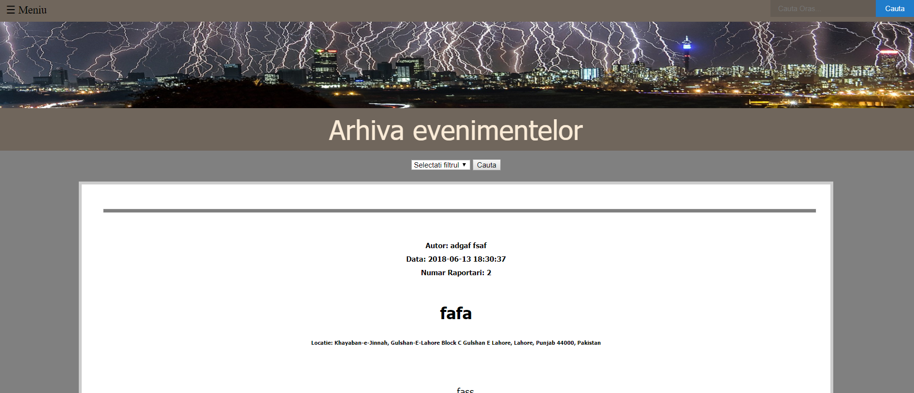
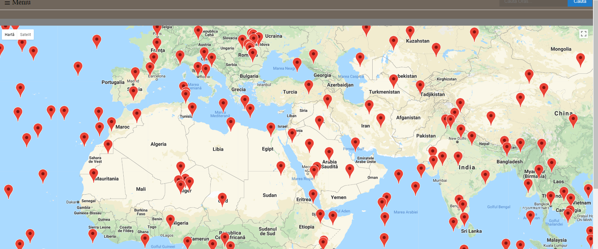
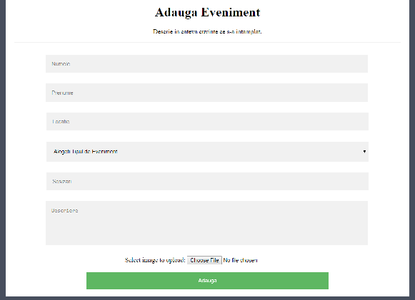

Proiectul Crisis Containment Service este o platforma Web care permite gestionarea situatiilor de urgenta (e.g., cutremure, incendii, inundatii etc.) pentru oricare utilizator, comportandu-se precum un forum. Aplicatia transmite notificari si alerte populatiei (afectate direct sau in vecinatate), prin intermediul email-urilor. Utilizand Geolocation API, sistemul poate furniza automat informatii de interes pentru gasirea unei persoane disparute (e.g. atunci cand aceasta este inconstienta ori ranita) si/sau legate de eventualele adaposturi si rute de salvare.
Pe pagina "Acasa" ni se vor afisa ultimele 10 evenimente adaugate in baza de date, iar in partea de jos a paginii este formularul de inscriere la noutatile ce vor aparea pe site . Tot pe aceasta pagina exista box-ul din partea dreapta,sus, in care se poate completa o anumita locatie care va fi cautata pe harta. In chenarul evenimentului curent avem la dispozitie butonul de Sign in fara de care nu putem efectua Report-ul, iar cand utilizatorul este logat, acesta se poate deloga prin apasarea butonului Sign out.
Optiunea de cautare locatie se afla in partea dreapta,sus si functioneaza prin completarea box-ului cu numele orasului cautat, apoi apasarea butonului "Cauta" .
Formularul de abonare la aplicatia web se gaseste in partea de jos a paginii. Acesta contine email-ul utilizatorul si orasul, pentru ca aplicatia sa poata trimite alerte utilizatorului doar din orasul respectiv. Nerespectarea formatului dorit in completarea acestora, duce la afisarea unui mesaj corespunzator pe ecran.
Butonul de Sign in se gaseste in sectiunea evenimentului curent afisat pe pagina de start. Logarea se realizeaza prin adresa de Gmail a utilizatorului. Dupa logarea cu succes, in titlul paginii va aparea un mesaj de bun-venit .
Ultimele zece evenimente adaugate in baza de date, vor putea fi vazute in pagina acasa. Pentru a trece de la un eveniment la altul, exista cele doua butoane din stanga(eveniment anterior) si din dreapta (eveniment urmator) al titlului. Tot aici, utilizatorii vor putea vedea care evenimente sunt de incredere si care nu, aplicatia verificand permanent numarul raportarilor si stabilind astfel gradul de incredere al evenimentelor introduse.
Butonul de deconectare apare doar atunci cand utilizatorul este deja logat. Acesta va aparea in acelasi loc, in chenarul evenimentului curent pe pagina.
Pe pagina "Inundatii" utilizatorii gasesc efectele pe care acestea le pot produce in natura, dar si omenirii. Tot pe aceasta pagina utilizatorii aplicatiei web sunt invatati cum sa previna aceste catastrofe naturale si cauzele aparitiilor lor.
Pe pagina "Cutremure" utilizatorii gasesc efectele pe care acestea le pot produce in natura, dar si omenirii. Tot pe aceasta pagina utilizatorii aplicatiei web sunt invatati cum sa previna aceste catastrofe naturale si cauzele aparitiilor lor.
Pe pagina "Incendii" utilizatorii gasesc efectele pe care acestea le pot produce in natura, dar si omenirii. Tot pe aceasta pagina utilizatorii aplicatiei web sunt invatati cum sa previna aceste catastrofe naturale si cauzele aparitiilor lor.
Pagina "Arhiva evenimentelor" prezinta toate evenimentele din baza de date si informatiile fiecareia dintre ele. Acestea sunt paginate cate zece pe cate o pagina si pot fi filtrate in functie de tipul sesizarii(cutremur/inundatie/incendiu/altceva) .
Pe aceasta pagina se gaseste harta ce cuprinde toate evenimentele din baza de date. Acestea sunt indicate pe harta cu semnul rosu, iar facand click pe acesta, se vor afisa informatiile evenimentelor. Folosindu-se API Google Maps, aplicatia permite actonarea functiei Zoom .
Pe pagina "Adaugare eveniment" se gaseste formularul de completare pentru a insera in baza de date un nou eveniment. Utilizatorul trebuie sa completeze numele, prenumele, locatia unde s-a produs evenimentul, tipul evenimentului(cutremur/inundatie/incendiu/altceva), sesizarea si descrierea a ceea ce s-a produs. De asemenea, utilizatorul poate adauga imagini referitoare la eveniment, prin apasarea butonului "Choose File" prin care alege respectiva imagine din propriul dispozitiv folosit. Dupa completarea acestor campuri obligatorii , se apasa pe butonul "Adauga" ,iar evenimentul va fi introdus cu succes in baza de date.
